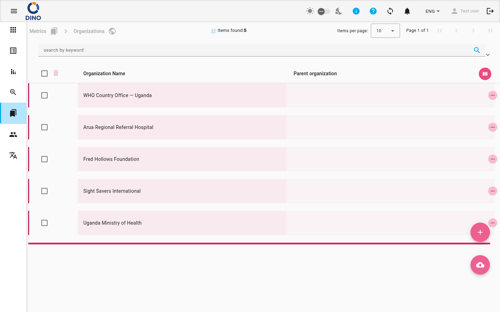

Organizzazioni
La pagina Organizzazioni elenca tutte le organizzazioni configurate nella tua istanza di Dino. Utilizza questa schermata per visualizzare, aggiungere, modificare, eliminare e importare organizzazioni, nonché per gestire la gerarchia organizzativa.

Colonne della Tabella
Per impostazione predefinita, la tabella mostra le seguenti colonne:
- Nome dell'Organizzazione – il nome dell'organizzazione. Questa colonna è ordinabile.
- Organizzazione Genitore – il nome dell'organizzazione genitore, se presente.
Ulteriori colonne (ID, Data di Creazione, Percorso Logo, URL Sito Web, Attributi Aggiuntivi) sono nascoste ma disponibili quando si personalizza la visualizzazione delle colonne utilizzando l'icona Vista Settimana (in basso a destra dell'intestazione della tabella).
Azioni delle Righe
Ogni riga ha tre azioni accessibili cliccando sul pulsante Altro (tre puntini) accanto alla riga:
- Visualizza (icona visibilità) – apre una finestra di dialogo in sola lettura con i dettagli dell'organizzazione.
- Modifica (icona matita) – apre una finestra di dialogo per modificare i dettagli dell'organizzazione.
- Elimina (icona cestino) – elimina definitivamente l'organizzazione. Viene visualizzata una finestra di conferma prima dell'eliminazione.
Elimina le organizzazioni con attenzione
L'eliminazione di un'organizzazione non può essere annullata. Assicurati che nessun caso o modulo attivo dipenda da essa prima di rimuoverla.
Puoi anche cliccare direttamente su una riga per selezionarla (per azioni di massa) o espanderla per vedere ulteriori dettagli in linea.
Azioni di Massa e Filtri
Seleziona più righe utilizzando le caselle di controllo nella prima colonna, quindi utilizza i pulsanti di eliminazione o modifica di massa che appaiono nella barra degli strumenti.
Ricerca e Filtri
La barra dei filtri nella parte superiore della pagina offre:
- Ricerca per parola chiave – filtra le organizzazioni per qualsiasi testo.
- Intervallo di date – filtra per intervallo di date di creazione.
- Gestore preset – salva e carica preset di filtri di ricerca.
- Esporta – scarica l'elenco filtrato come file.
Clicca sul pulsante Filtro per aprire filtri avanzati per un controllo più granulare.
Aggiunta e Importazione di Organizzazioni
Due pulsanti di azione flottanti sono sempre visibili nell'angolo in basso a destra:
- Aggiungi Nuovo (icona più) – apre una finestra di dialogo per creare una nuova organizzazione. Ti verrà chiesto di inserire il nome dell'organizzazione, l'organizzazione genitore, l'URL del sito web e altri dettagli.
- Importa (icona caricamento cloud) – consente di caricare un file (CSV, JSON o XML) per importare in blocco le organizzazioni. Segui le istruzioni a schermo per mappare i campi.
Internazionalizzazione
I nomi e le etichette delle organizzazioni possono essere tradotti se la tua istanza di Dino supporta più lingue. Vedi Lingue per i dettagli.
Passaggi: Creare una Nuova Organizzazione
- Clicca sul pulsante flottante Aggiungi Nuovo.
- Nella finestra di dialogo che si apre, compila i campi obbligatori (Nome dell'Organizzazione e almeno un attributo).
- Opzionalmente imposta un'Organizzazione Genitore per creare una gerarchia.
- Clicca su Salva. La nuova organizzazione appare immediatamente nell'elenco.
Passaggi: Esportare Organizzazioni
- Applica i filtri desiderati nella barra di ricerca.
- Clicca sul pulsante Esporta (icona di download cloud) nella barra dei filtri.
- Scegli il formato di esportazione (CSV, Excel, ecc.) e conferma.
- Il file viene scaricato sul tuo dispositivo.
Pagine Correlate
- Panoramica delle Metriche – tutte le pagine di gestione delle metriche.
- Aree Tematiche – gestisci le aree tematiche per le organizzazioni.
- Casi – associa i casi alle organizzazioni.
- Luoghi – collega i luoghi alle organizzazioni.
- Progetti – connetti le organizzazioni ai progetti.